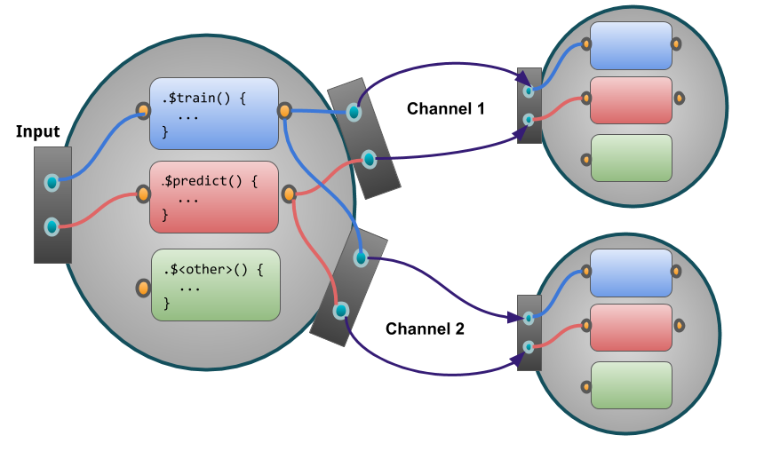

6.3 Adding new PipeOps
This section showcases how the mlr3pipelines package can be extended to include custom PipeOps.
To run the following examples, we will need a Task; we are using the well-known “Iris” task:
library("mlr3")
task = tsk("iris")
task$data()## Species Petal.Length Petal.Width Sepal.Length Sepal.Width
## 1: setosa 1.4 0.2 5.1 3.5
## 2: setosa 1.4 0.2 4.9 3.0
## 3: setosa 1.3 0.2 4.7 3.2
## 4: setosa 1.5 0.2 4.6 3.1
## 5: setosa 1.4 0.2 5.0 3.6
## ---
## 146: virginica 5.2 2.3 6.7 3.0
## 147: virginica 5.0 1.9 6.3 2.5
## 148: virginica 5.2 2.0 6.5 3.0
## 149: virginica 5.4 2.3 6.2 3.4
## 150: virginica 5.1 1.8 5.9 3.0mlr3pipelines is fundamentally built around R6. When planning to create custom PipeOp objects, it can only help to familiarize yourself with it.
In principle, all a PipeOp must do is inherit from the PipeOp R6 class and implement the .train() and .predict() functions.
There are, however, several auxiliary subclasses that can make the creation of certain operations much easier.
6.3.1 General Case Example: PipeOpCopy
A very simple yet useful PipeOp is PipeOpCopy, which takes a single input and creates a variable number of output channels, all of which receive a copy of the input data.
It is a simple example that showcases the important steps in defining a custom PipeOp.
We will show a simplified version here, PipeOpCopyTwo, that creates exactly two copies of its input data.
The following figure visualizes how our PipeOp is situated in the Pipeline and the significant in- and outputs.

6.3.1.1 First Steps: Inheriting from PipeOp
The first part of creating a custom PipeOp is inheriting from PipeOp.
We make a mental note that we need to implement a .train() and a .predict() function, and that we probably want to have an initialize() as well:
PipeOpCopyTwo = R6::R6Class("PipeOpCopyTwo",
inherit = mlr3pipelines::PipeOp,
public = list(
initialize = function(id = "copy.two") {
....
},
),
private == list(
.train = function(inputs) {
....
},
.predict = function(inputs) {
....
}
)
)Note, that private methods, e.g. .train and .predict etc are prefixed with a ..
6.3.1.2 Channel Definitions
We need to tell the PipeOp the layout of its channels: How many there are, what their names are going to be, and what types are acceptable.
This is done on initialization of the PipeOp (using a super$initialize call) by giving the input and output data.table objects.
These must have three columns: a "name" column giving the names of input and output channels, and a "train" and "predict" column naming the class of objects we expect during training and prediction as input / output.
A special value for these classes is "*", which indicates that any class will be accepted; our simple copy operator accepts any kind of input, so this will be useful. We have only one input, but two output channels.
By convention, we name a single channel "input" or "output", and a group of channels ["input1", "input2", …], unless there is a reason to give specific different names. Therefore, our input data.table will have a single row <"input", "*", "*">, and our output table will have two rows, <"output1", "*", "*"> and <"output2", "*", "*">.
All of this is given to the PipeOp creator. Our initialize() will thus look as follows:
initialize = function(id = "copy.two") {
input = data.table::data.table(name = "input", train = "*", predict = "*")
# the following will create two rows and automatically fill the `train`
# and `predict` cols with "*"
output = data.table::data.table(
name = c("output1", "output2"),
train = "*", predict = "*"
)
super$initialize(id,
input = input,
output = output
)
}6.3.1.3 Train and Predict
Both .train() and .predict() will receive a list as input and must give a list in return.
According to our input and output definitions, we will always get a list with a single element as input, and will need to return a list with two elements. Because all we want to do is create two copies, we will just create the copies using c(inputs, inputs).
Two things to consider:
The
.train()function must always modify theself$statevariable to something that is notNULLorNO_OP. This is because the$stateslot is used as a signal thatPipeOphas been trained on data, even if the state itself is not important to thePipeOp(as in our case). Therefore, our.train()will setself$state = list().It is not necessary to “clone” our input or make deep copies, because we don’t modify the data. However, if we were changing a reference-passed object, for example by changing data in a
Task, we would have to make a deep copy first. This is because aPipeOpmay never modify its input object by reference.
Our .train() and .predict() functions are now:
.train = function(inputs) {
self$state = list()
c(inputs, inputs)
}.predict = function(inputs) {
c(inputs, inputs)
}6.3.1.4 Putting it Together
The whole definition thus becomes
PipeOpCopyTwo = R6::R6Class("PipeOpCopyTwo",
inherit = mlr3pipelines::PipeOp,
public = list(
initialize = function(id = "copy.two") {
super$initialize(id,
input = data.table::data.table(name = "input", train = "*", predict = "*"),
output = data.table::data.table(name = c("output1", "output2"),
train = "*", predict = "*")
)
}
),
private = list(
.train = function(inputs) {
self$state = list()
c(inputs, inputs)
},
.predict = function(inputs) {
c(inputs, inputs)
}
)
)We can create an instance of our PipeOp, put it in a graph, and see what happens when we train it on something:
library("mlr3pipelines")
poct = PipeOpCopyTwo$new()
gr = Graph$new()
gr$add_pipeop(poct)
print(gr)## Graph with 1 PipeOps:
## ID State sccssors prdcssors
## copy.two <<UNTRAINED>>result = gr$train(task)
str(result)## List of 2
## $ copy.two.output1:Classes 'TaskClassif', 'TaskSupervised', 'Task', 'R6' <TaskClassif:iris>
## $ copy.two.output2:Classes 'TaskClassif', 'TaskSupervised', 'Task', 'R6' <TaskClassif:iris>6.3.2 Special Case: Preprocessing
Many PipeOps perform an operation on exactly one Task, and return exactly one Task. They may even not care about the “Target” / “Outcome” variable of that task, and only do some modification of some input data.
However, it is usually important to them that the Task on which they perform prediction has the same data columns as the Task on which they train.
For these cases, the auxiliary base class PipeOpTaskPreproc exists.
It inherits from PipeOp itself, and other PipeOps should use it if they fall in the kind of use-case named above.
When inheriting from PipeOpTaskPreproc, one must either implement the private methods .train_task() and .predict_task(), or the methods .train_dt(), .predict_dt(), depending on whether wants to operate on a Task object or on its data as data.tables.
In the second case, one can optionally also overload the .select_cols() method, which chooses which of the incoming Task’s features are given to the .train_dt() / .predict_dt() functions.
The following will show two examples: PipeOpDropNA, which removes a Task’s rows with missing values during training (and implements .train_task() and .predict_task()), and PipeOpScale, which scales a Task’s numeric columns (and implements .train_dt(), .predict_dt(), and .select_cols()).
6.3.2.1 Example: PipeOpDropNA
Dropping rows with missing values may be important when training a model that can not handle them.
Because mlr3 Tasks only contain a view to the underlying data, it is not necessary to modify data to remove rows with missing values.
Instead, the rows can be removed using the Task’s $filter method, which modifies the Task in-place.
This is done in the private method .train_task().
We take care that we also set the $state slot to signal that the PipeOp was trained.
The private method .predict_task() does not need to do anything; removing missing values during prediction is not as useful, since learners that cannot handle them will just ignore the respective rows.
Furthermore, mlr3 expects a Learner to always return just as many predictions as it was given input rows, so a PipeOp that removes Task rows during training can not be used inside a GraphLearner.
When we inherit from PipeOpTaskPreproc, it sets the input and output data.tables for us to only accept a single Task.
The only thing we do during initialize() is therefore to set an id (which can optionally be changed by the user).
The complete PipeOpDropNA can therefore be written as follows.
Note that it inherits from PipeOpTaskPreproc, unlike the PipeOpCopyTwo example from above:
PipeOpDropNA = R6::R6Class("PipeOpDropNA",
inherit = mlr3pipelines::PipeOpTaskPreproc,
public = list(
initialize = function(id = "drop.na") {
super$initialize(id)
}
),
private = list(
.train_task = function(task) {
self$state = list()
featuredata = task$data(cols = task$feature_names)
exclude = apply(is.na(featuredata), 1, any)
task$filter(task$row_ids[!exclude])
},
.predict_task = function(task) {
# nothing to be done
task
}
)
)To test this PipeOp, we create a small task with missing values:
smalliris = iris[(1:5) * 30, ]
smalliris[1, 1] = NA
smalliris[2, 2] = NA
sitask = as_task_classif(smalliris, target = "Species")
print(sitask$data())## Species Petal.Length Petal.Width Sepal.Length Sepal.Width
## 1: setosa 1.6 0.2 NA 3.2
## 2: versicolor 3.9 1.4 5.2 NA
## 3: versicolor 4.0 1.3 5.5 2.5
## 4: virginica 5.0 1.5 6.0 2.2
## 5: virginica 5.1 1.8 5.9 3.0We test this by feeding it to a new Graph that uses PipeOpDropNA.
gr = Graph$new()
gr$add_pipeop(PipeOpDropNA$new())
filtered_task = gr$train(sitask)[[1]]
print(filtered_task$data())## Species Petal.Length Petal.Width Sepal.Length Sepal.Width
## 1: versicolor 4.0 1.3 5.5 2.5
## 2: virginica 5.0 1.5 6.0 2.2
## 3: virginica 5.1 1.8 5.9 3.06.3.2.2 Example: PipeOpScaleAlways
An often-applied preprocessing step is to simply center and/or scale the data to mean \(0\) and standard deviation \(1\).
This fits the PipeOpTaskPreproc pattern quite well.
Because it always replaces all columns that it operates on, and does not require any information about the task’s target, it only needs to overload the .train_dt() and .predict_dt() functions.
This saves some boilerplate-code from getting the correct feature columns out of the task, and replacing them after modification.
Because scaling only makes sense on numeric features, we want to instruct PipeOpTaskPreproc to give us only these numeric columns.
We do this by overloading the .select_cols() function: It is called by the class to determine which columns to pass to .train_dt() and .predict_dt().
Its input is the Task that is being transformed, and it should return a character vector of all features to work with.
When it is not overloaded, it uses all columns; instead, we will set it to only give us numeric columns.
Because the levels() of the data table given to .train_dt() and .predict_dt() may be different from the task’s levels, these functions must also take a levels argument that is a named list of column names indicating their levels.
When working with numeric data, this argument can be ignored, but it should be used instead of levels(dt[[column]]) for factorial or character columns.
This is the first PipeOp where we will be using the $state slot for something useful: We save the centering offset and scaling coefficient and use it in $.predict()!
For simplicity, we are not using hyperparameters and will always scale and center all data.
Compare this PipeOpScaleAlways operator to the one defined inside the mlr3pipelines package, PipeOpScale.
PipeOpScaleAlways = R6::R6Class("PipeOpScaleAlways",
inherit = mlr3pipelines::PipeOpTaskPreproc,
public = list(
initialize = function(id = "scale.always") {
super$initialize(id = id)
}
),
private = list(
.select_cols = function(task) {
task$feature_types[type == "numeric", id]
},
.train_dt = function(dt, levels, target) {
sc = scale(as.matrix(dt))
self$state = list(
center = attr(sc, "scaled:center"),
scale = attr(sc, "scaled:scale")
)
sc
},
.predict_dt = function(dt, levels) {
t((t(dt) - self$state$center) / self$state$scale)
}
)
)(Note for the observant: If you check PipeOpScale.R from the mlr3pipelines package, you will notice that is uses “get("type")” and “get("id")” instead of “type” and “id,” because the static code checker on CRAN would otherwise complain about references to undefined variables. This is a “problem” with data.table and not exclusive to mlr3pipelines.)
We can, again, create a new Graph that uses this PipeOp to test it.
Compare the resulting data to the original “iris” Task data printed at the beginning:
gr = Graph$new()
gr$add_pipeop(PipeOpScaleAlways$new())
result = gr$train(task)
result[[1]]$data()## Species Petal.Length Petal.Width Sepal.Length Sepal.Width
## 1: setosa -1.3358 -1.3111 -0.89767 1.01560
## 2: setosa -1.3358 -1.3111 -1.13920 -0.13154
## 3: setosa -1.3924 -1.3111 -1.38073 0.32732
## 4: setosa -1.2791 -1.3111 -1.50149 0.09789
## 5: setosa -1.3358 -1.3111 -1.01844 1.24503
## ---
## 146: virginica 0.8169 1.4440 1.03454 -0.13154
## 147: virginica 0.7036 0.9192 0.55149 -1.27868
## 148: virginica 0.8169 1.0504 0.79301 -0.13154
## 149: virginica 0.9302 1.4440 0.43072 0.78617
## 150: virginica 0.7602 0.7880 0.06843 -0.131546.3.3 Special Case: Preprocessing with Simple Train
It is possible to make even further simplifications for many PipeOps that perform mostly the same operation during training and prediction.
The point of Task preprocessing is often to modify the training data in mostly the same way as prediction data (but in a way that may depend on training data).
Consider constant feature removal, for example: The goal is to remove features that have no variance, or only a single factor level. However, what features get removed must be decided during training, and may only depend on training data. Furthermore, the actual process of removing features is the same during training and prediction.
A simplification to make is therefore to have a private method .get_state(task) which sets the $state slot during training, and a private method .transform(task), which gets called both during training and prediction.
This is done in the PipeOpTaskPreprocSimple class.
Just like PipeOpTaskPreproc, one can inherit from this and overload these functions to get a PipeOp that performs preprocessing with very little boilerplate code.
Just like PipeOpTaskPreproc, PipeOpTaskPreprocSimple offers the possibility to instead overload the .get_state_dt(dt, levels) and .transform_dt(dt, levels) methods (and optionally, again, the .select_cols(task) function) to operate on data.table feature data instead of the whole Task.
Even some methods that do not use PipeOpTaskPreprocSimple could work in a similar way: The PipeOpScaleAlways example from above will be shown to also work with this paradigm.
6.3.3.1 Example: PipeOpDropConst
A typical example of a preprocessing operation that does almost the same operation during training and prediction is an operation that drops features depending on a criterion that is evaluated during training.
One simple example of this is dropping constant features.
Because the mlr3 Task class offers a flexible view on underlying data, it is most efficient to drop columns from the task directly using its $select() function, so the .get_state_dt(dt, levels) / .transform_dt(dt, levels) functions will not get used; instead we overload the .get_state(task) and .transform(task) methods.
The .get_state() function’s result is saved to the $state slot, so we want to return something that is useful for dropping features.
We choose to save the names of all the columns that have nonzero variance.
For brevity, we use length(unique(column)) > 1 to check whether more than one distinct value is present; a more sophisticated version could have a tolerance parameter for numeric values that are very close to each other.
The .transform() method is evaluated both during training and prediction, and can rely on the $state slot being present.
All it does here is call the Task$select function with the columns we chose to keep.
The full PipeOp could be written as follows:
PipeOpDropConst = R6::R6Class("PipeOpDropConst",
inherit = mlr3pipelines::PipeOpTaskPreprocSimple,
public = list(
initialize = function(id = "drop.const") {
super$initialize(id = id)
}
),
private = list(
.get_state = function(task) {
data = task$data(cols = task$feature_names)
nonconst = sapply(data, function(column) length(unique(column)) > 1)
list(cnames = colnames(data)[nonconst])
},
.transform = function(task) {
task$select(self$state$cnames)
}
)
)This can be tested using the first five rows of the “Iris” Task, for which one feature ("Petal.Width") is constant:
irishead = task$clone()$filter(1:5)
irishead$data()## Species Petal.Length Petal.Width Sepal.Length Sepal.Width
## 1: setosa 1.4 0.2 5.1 3.5
## 2: setosa 1.4 0.2 4.9 3.0
## 3: setosa 1.3 0.2 4.7 3.2
## 4: setosa 1.5 0.2 4.6 3.1
## 5: setosa 1.4 0.2 5.0 3.6gr = Graph$new()$add_pipeop(PipeOpDropConst$new())
dropped_task = gr$train(irishead)[[1]]
dropped_task$data()## Species Petal.Length Sepal.Length Sepal.Width
## 1: setosa 1.4 5.1 3.5
## 2: setosa 1.4 4.9 3.0
## 3: setosa 1.3 4.7 3.2
## 4: setosa 1.5 4.6 3.1
## 5: setosa 1.4 5.0 3.6We can also see that the $state was correctly set.
Calling $.predict() with this graph, even with different data (the whole Iris Task!) will still drop the "Petal.Width" column, as it should.
gr$pipeops$drop.const$state## $cnames
## [1] "Petal.Length" "Sepal.Length" "Sepal.Width"
##
## $affected_cols
## [1] "Petal.Length" "Petal.Width" "Sepal.Length" "Sepal.Width"
##
## $intasklayout
## id type
## 1: Petal.Length numeric
## 2: Petal.Width numeric
## 3: Sepal.Length numeric
## 4: Sepal.Width numeric
##
## $outtasklayout
## id type
## 1: Petal.Length numeric
## 2: Sepal.Length numeric
## 3: Sepal.Width numeric
##
## $outtaskshell
## Empty data.table (0 rows and 4 cols): Species,Petal.Length,Sepal.Length,Sepal.Widthdropped_predict = gr$predict(task)[[1]]
dropped_predict$data()## Species Petal.Length Sepal.Length Sepal.Width
## 1: setosa 1.4 5.1 3.5
## 2: setosa 1.4 4.9 3.0
## 3: setosa 1.3 4.7 3.2
## 4: setosa 1.5 4.6 3.1
## 5: setosa 1.4 5.0 3.6
## ---
## 146: virginica 5.2 6.7 3.0
## 147: virginica 5.0 6.3 2.5
## 148: virginica 5.2 6.5 3.0
## 149: virginica 5.4 6.2 3.4
## 150: virginica 5.1 5.9 3.06.3.3.2 Example: PipeOpScaleAlwaysSimple
This example will show how a PipeOpTaskPreprocSimple can be used when only working on feature data in form of a data.table.
Instead of calling the scale() function, the center and scale values are calculated directly and saved to the $state slot.
The .transform_dt() function will then perform the same operation during both training and prediction: subtract the center and divide by the scale value.
As in the PipeOpScaleAlways example above, we use .select_cols() so that we only work on numeric columns.
PipeOpScaleAlwaysSimple = R6::R6Class("PipeOpScaleAlwaysSimple",
inherit = mlr3pipelines::PipeOpTaskPreprocSimple,
public = list(
initialize = function(id = "scale.always.simple") {
super$initialize(id = id)
}
),
private = list(
.select_cols = function(task) {
task$feature_types[type == "numeric", id]
},
.get_state_dt = function(dt, levels, target) {
list(
center = sapply(dt, mean),
scale = sapply(dt, sd)
)
},
.transform_dt = function(dt, levels) {
t((t(dt) - self$state$center) / self$state$scale)
}
)
)We can compare this PipeOp to the one above to show that it behaves the same.
gr = Graph$new()$add_pipeop(PipeOpScaleAlways$new())
result_posa = gr$train(task)[[1]]
gr = Graph$new()$add_pipeop(PipeOpScaleAlwaysSimple$new())
result_posa_simple = gr$train(task)[[1]]result_posa$data()## Species Petal.Length Petal.Width Sepal.Length Sepal.Width
## 1: setosa -1.3358 -1.3111 -0.89767 1.01560
## 2: setosa -1.3358 -1.3111 -1.13920 -0.13154
## 3: setosa -1.3924 -1.3111 -1.38073 0.32732
## 4: setosa -1.2791 -1.3111 -1.50149 0.09789
## 5: setosa -1.3358 -1.3111 -1.01844 1.24503
## ---
## 146: virginica 0.8169 1.4440 1.03454 -0.13154
## 147: virginica 0.7036 0.9192 0.55149 -1.27868
## 148: virginica 0.8169 1.0504 0.79301 -0.13154
## 149: virginica 0.9302 1.4440 0.43072 0.78617
## 150: virginica 0.7602 0.7880 0.06843 -0.13154result_posa_simple$data()## Species Petal.Length Petal.Width Sepal.Length Sepal.Width
## 1: setosa -1.3358 -1.3111 -0.89767 1.01560
## 2: setosa -1.3358 -1.3111 -1.13920 -0.13154
## 3: setosa -1.3924 -1.3111 -1.38073 0.32732
## 4: setosa -1.2791 -1.3111 -1.50149 0.09789
## 5: setosa -1.3358 -1.3111 -1.01844 1.24503
## ---
## 146: virginica 0.8169 1.4440 1.03454 -0.13154
## 147: virginica 0.7036 0.9192 0.55149 -1.27868
## 148: virginica 0.8169 1.0504 0.79301 -0.13154
## 149: virginica 0.9302 1.4440 0.43072 0.78617
## 150: virginica 0.7602 0.7880 0.06843 -0.131546.3.4 Hyperparameters
mlr3pipelines uses the paradox package to define parameter spaces for PipeOps.
Parameters for PipeOps can modify their behavior in certain ways, e.g. switch centering or scaling off in the PipeOpScale operator.
The unified interface makes it possible to have parameters for whole Graphs that modify the individual PipeOp’s behavior.
The Graphs, when encapsulated in GraphLearners, can even be tuned using the tuning functionality in mlr3tuning.
Hyperparameters are declared during initialization, when calling the PipeOp’s $initialize() function, by giving a param_set argument.
The param_set must be a ParamSet from the paradox package; see the tuning chapter or the in-depth paradox chapter for more information on how to define parameter spaces.
After construction, the ParamSet can be accessed through the $param_set slot.
While it is possible to modify this ParamSet, using e.g. the $add() and $add_dep() functions, after adding it to the PipeOp, it is strongly advised against.
Hyperparameters can be set and queried through the $values slot.
When setting hyperparameters, they are automatically checked to satisfy all conditions set by the $param_set, so it is not necessary to type check them.
Be aware that it is always possible to remove hyperparameter values.
When a PipeOp is initialized, it usually does not have any parameter values—$values takes the value list().
It is possible to set initial parameter values in the $initialize() constructor; this must be done after the super$initialize() call where the corresponding ParamSet must be supplied.
This is because setting $values checks against the current $param_set, which would fail if the $param_set was not set yet.
When using an underlying library function (the scale function in PipeOpScale, say), then there is usually a “default” behaviour of that function when a parameter is not given.
It is good practice to use this default behaviour whenever a parameter is not set (or when it was removed).
This can easily be done when using the mlr3misc library’s mlr3misc::invoke() function, which has functionality similar to do.call().
6.3.4.1 Hyperparameter Example: PipeOpScale
How to use hyperparameters can best be shown through the example of PipeOpScale, which is very similar to the example above, PipeOpScaleAlways.
The difference is made by the presence of hyperparameters.
PipeOpScale constructs a ParamSet in its $initialize function and passes this on to the super$initialize function:
PipeOpScale$public_methods$initialize## function (id = "scale", param_vals = list())
## .__PipeOpScale__initialize(self = self, private = private, super = super,
## id = id, param_vals = param_vals)
## <environment: namespace:mlr3pipelines>The user has access to this and can set and get parameters. Types are automatically checked:
pss = po("scale")
print(pss$param_set)## <ParamSet:scale>
## id class lower upper nlevels default value
## 1: center ParamLgl NA NA 2 TRUE
## 2: scale ParamLgl NA NA 2 TRUE
## 3: robust ParamLgl NA NA 2 <NoDefault[3]> FALSE
## 4: affect_columns ParamUty NA NA Inf <Selector[1]>pss$param_set$values$center = FALSE
print(pss$param_set$values)## $robust
## [1] FALSE
##
## $center
## [1] FALSEpss$param_set$values$scale = "TRUE" # bad input is checked!## Error in self$assert(xs): Assertion on 'xs' failed: scale: Must be of type 'logical flag', not 'character'.How PipeOpScale handles its parameters can be seen in its $.train_dt method: It gets the relevant parameters from its $values slot and uses them in the mlr3misc::invoke() call.
This has the advantage over calling scale() directly that if a parameter is not given, its default value from the scale() function will be used.
PipeOpScale$private_methods$.train_dt## function (dt, levels, target)
## .__PipeOpScale__.train_dt(self = self, private = private, super = super,
## dt = dt, levels = levels, target = target)
## <environment: namespace:mlr3pipelines>Another change that is necessary compared to PipeOpScaleAlways is that the attributes "scaled:scale" and "scaled:center" are not always present, depending on parameters, and possibly need to be set to default values \(1\) or \(0\), respectively.
It is now even possible (if a bit pointless) to call PipeOpScale with both scale and center set to FALSE, which returns the original dataset, unchanged.
pss$param_set$values$scale = FALSE
pss$param_set$values$center = FALSE
gr = Graph$new()
gr$add_pipeop(pss)
result = gr$train(task)
result[[1]]$data()## Species Petal.Length Petal.Width Sepal.Length Sepal.Width
## 1: setosa 1.4 0.2 5.1 3.5
## 2: setosa 1.4 0.2 4.9 3.0
## 3: setosa 1.3 0.2 4.7 3.2
## 4: setosa 1.5 0.2 4.6 3.1
## 5: setosa 1.4 0.2 5.0 3.6
## ---
## 146: virginica 5.2 2.3 6.7 3.0
## 147: virginica 5.0 1.9 6.3 2.5
## 148: virginica 5.2 2.0 6.5 3.0
## 149: virginica 5.4 2.3 6.2 3.4
## 150: virginica 5.1 1.8 5.9 3.0